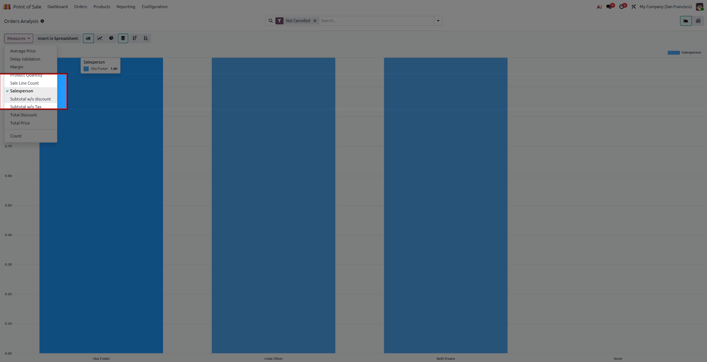
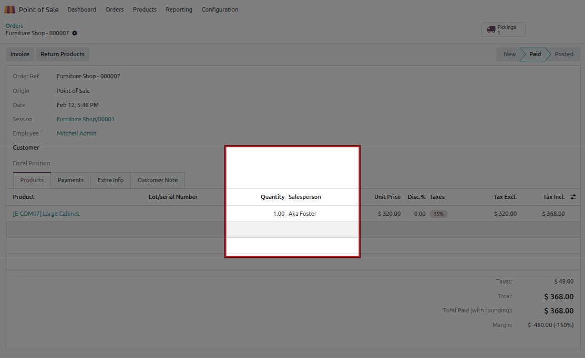
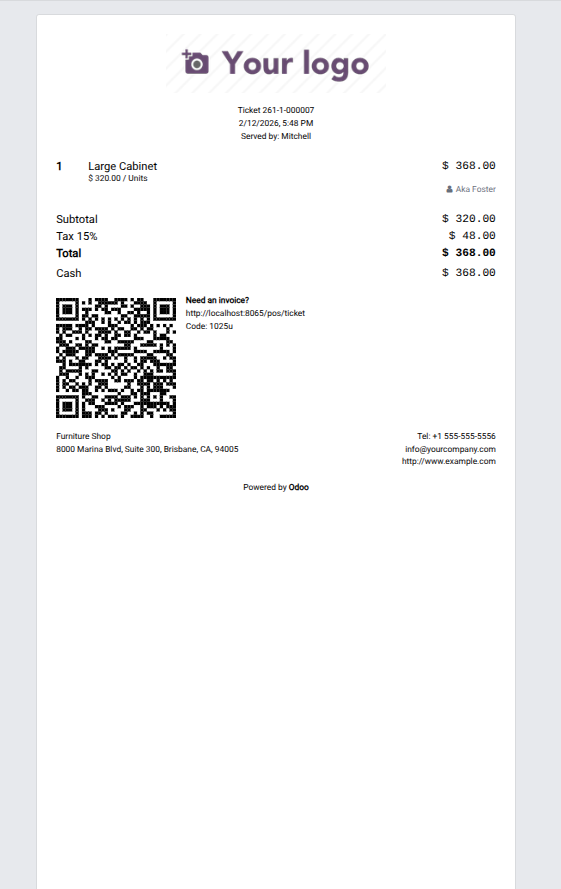

Assign salesperson per POS order line, restrict selectable salespersons by shop, and analyze salesperson performance directly from POS reports.
Screenshots | Features | FAQs | Releases
Below are complete module screenshots with explanation for each screen.
How module media and highlighted screenshots appear on the listing page.

Cashier selects salesperson for the selected POS order line from allowed employees.

The assigned salesperson appears directly on the POS line in the register area.
Order line view showing salesperson details attached to the sold product line.
Compact display preview of register and line-level salesperson behavior.
Q: How do I configure available salespersons per shop?
A: Open Point of Sale configuration and select employees in the allowed salesperson field.
Q: Can I track salesperson in reports?
A: Yes. POS Orders Analysis includes salesperson search/group options.
Q: Does the POS popup show employee avatar?
A: Yes, avatar is shown when available on employee image.
19.0.1.0.5 - Reordered screenshots and set listing preview image as top screenshot.
19.0.1.0.3 - Added explained screenshot gallery with all module images.
19.0.1.0.0 - Initial release with line-level salesperson assignment for POS.
Support: Hameed Pvt.Ltd | nadeemwazir0123@gmail.com | by Muhammad Nadeem (nk)